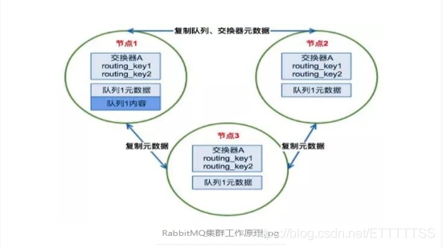
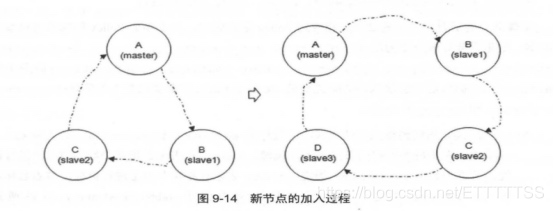
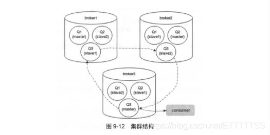

##【普通模式】
RabbitMQ是基于Erlang编写，Erlang语言天生具备分布式特性（通过同步Erlang集群各节点的magic cookie来实现）。因此，RabbitMQ天然支持Clustering。这使得RabbitMQ本身不需要像ActiveMQ、Kafka那样通过ZooKeeper分别来实现HA高可用方案和保存集群的元数据。集群是保证可靠性的一种方式，同时可以通过水平扩展以达到增加消息吞吐量能力的目的。
一、RabbitMQ集群元数据的同步
RabbitMQ集群会始终同步四种类型的内部元数据：
1.队列元数据：队列名称、属性；
2.交换器元数据：交换器名称、类型和属性；
3.绑定元数据：交换器与队列绑定关系，如binding_key；
4.vhost元数据：虚拟主机内部配置和属性；
因此，当用户访问其中任何一个RabbitMQ节点时，通过rabbitmqctl查询到的queue／user／exchange/ vhost等信息都是相同的。
注意：队列只同步元数据信息，不会同步存储的消息，消息只会存在于创建该队列的节点上，其它节点只知道这个队列的元数据信息和一个指向队列的owner node的地址。
二、为何RabbitMQ集群仅采用元数据同步的方式
RabbitMQ这么设计主要是基于集群本身的性能和存储空间上来考虑。
第一，存储空间，如果每个集群节点都拥有所有Queue的完全数据拷贝，那么每个节点的存储空间会非常大，集群的消息积压能力会非常弱（无法通过集群节点的扩容提高消息积压能力）；
第二，性能，消息的发布者需要将消息复制到每一个集群节点，对于持久化消息，网络和磁盘同步复制的开销都会明显增加。
三、RabbitMQ集群的基本原理

场景1、客户端直接连接队列所在节点
如果有一个消息生产者或者消息消费者通过amqp-client的客户端连接至节点1进行消息的发布或者订阅，那么此时的集群中的消息收发只与节点1相关。
场景2、客户端连接的是非队列数据所在节点
如果消息生产者所连接的是节点2或者节点3，此时队列1的完整数据不在该两个节点上，那么在发送消息过程中这两个节点主要起了一个路由转发作用，根据这两个节点上的元数据（也就是上文提到的：指向queue的owner node的指针）转发至节点1上，最终发送的消息还是会存储至节点1的队列1上。
同样，如果消息消费者所连接的节点2或者节点3，那这两个节点也会作为路由节点起到转发作用，将会从节点1的队列1中拉取消息进行消费。
由于节点之间存在路由转发的情况，所以对于RabbitMQ集群最好是在一个局域网。
【镜像模式—镜像队列】
需要在集群普通模式的基础上进行镜像队列的配置
镜像队列
队列进程及其内容仅仅维持在单个节点之上，所以一个节点的失效表现为其对应的队列不可用。
引入镜像队列（Mirror Queue）的机制，可以将队列镜像到集群中的其他 Broker 节点之上，如果集群中的一个节点失效了，队列能够自动切换到镜像中的另一个节点上以保证服务的可用性。
针对每个队列的（以下简称镜像队列）都包含一个主节点（master）和若干个从节点（slave）

由图可知master和slave组成了一个链表结构。
slave会准确地按照maste执行命令地顺序进行动作，故slave和master上维护的状态应该是相同的。如果master由于某种原因失效，那么“资历最老”（基于slave加入cluster的时间排序）的slave会被提升为新的master。发送到镜像队列的所有消息会被同时发往 master和所有的slave上，如果此时master挂掉了，消息还会在slave上，这样slave提升为 master的时候消息也不会丢失。

集群中的每个 Broker 节点都包含 1 个队列的 master 和 2 个队列的 slave， Q1 的负载大多都在 broker1 上，Q2 的负载大多都集中在 broker2 上，Q3 的负载大多都集中在 broker3 上，只要确保队列的 master 节点均匀散落在集群中的各个 Broker 节点即可确保很大程度的负载均衡。
master提供读写服务，在slave上的操作都会路由到master上，slave只做备份-主备切换
RabbitMQ 的镜像队列同时支持publisher confirm和事务两种机制
当slave挂掉之后，除了与slave相连的客户端连接全部断开，没有其他影响
当master挂掉之后，会有以下影响：
- 与master连接的客户端连接全部断开；
- 选举最老的slave作为新的master，因为最老的slave与旧的master之间的同步状态应该是最好的。如果此时所有slave处于未同步状态，则未同步的消息会丢失；
- 新的master重新入队所有unack的消息，因为新的slave无法区分这些unack的消息是否己经到达客户端，或者是ack信息丢失在老的master链路上，再或者是丢失在老的master 组播ack消息到所有slave的链路上，所以出于消息可靠性的考虑，重新入队所有unack的消息，不过此时客户端可能会有重复消息；
- 如果客户端连接着slave，并且Basic.Consume 消费时指定了x-cancel-on-ha-failover 参数，那么断开之时客户端会收到一个Consumer Cancellation Notification的通知，消费者客户端中会回调Consumer接口的handleCancel方法。如果未指定x-cancel-on-ha-failover参数，那么消费者将无法感知 master 宕机；
当所有slave都出现未同步状态，并且ha-prornote-on-shutdown设置为when-synced(默认)时，如果master因为主动原因停掉，比如通过rabbitrnqctl stop命令或者优雅关闭操作系统，那么slave不会接管master，也就是此时镜像队列不可用。但是如果master因为被动原因停掉，比如Erlang虚拟机或者操作系统崩溃，那么slave会接管master。这个配置项隐含的价值取向是保证消息可靠不丢失，同时放弃了可用性。如果ha-prornote-on-shutdown设置为always ，那么不论master因为何种原因停止，slave都会接管master，优先保证可用性，不过消息可能会丢失。
镜像队列中最后一个停止的节点会是master，启动顺序必须是master先启动。如果slave先启动，它会有30 秒的等待时间，等待master的启动，然后加入到集群中。如果30 秒内 master没有启动，slave会自动停止。当所有节点因故(断电等)同时离线时，每个节点都认为自己不是最后一个停止的节点，要恢复镜像队列，可以尝试在30秒内启动所有节点。